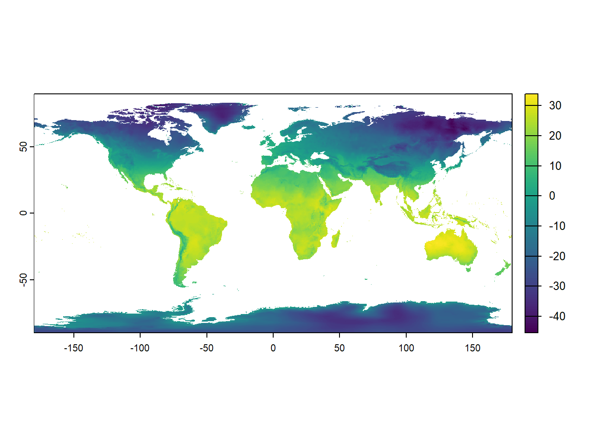

Chapter 4 Git, GitHub and RMarkdown
4.1 Learning outcomes
By the end of this practical you should be able to:
- Explain the use of and differences between Git and GitHub
- Create reproducible and open R code
- Produce RMarkdown documents that explain code and analysis
4.2 Homework
Outside of our scheduled sessions you should be doing around 12 hours of extra study per week. Feel free to follow your own GIS interests, but good places to start include the following:
Exam Each week we will provide a short task to test your knowledge, these should be used to guide your study for the final exam.
The task this week is to:
- Read in global gender inequality data
- Join the global gender inequality index to spatial data of the World, creating a new column of difference in inequality between 2010 and 2019
- Share it with the World on GitHub
- Add you repository URL to the circulated spreadsheet
Reading
This week:
Chapter 2 “Basics†from R Markdown: The Definitive Guide by Xie, Allaire and Grolemund (2019)
Chapter 2 “Why RMarkdown†from RMarkdown for Scientists by Tierney (2020).
The paper “Packaging Data Analytical Work Reproducibly Using R (and Friends)†by Marwick, Boettiger & Mullen (2018).
Watching
Hadley Wickham’s Keynote from the European Molecular Biology Laboratory (EMBL). This will be the same for a few weeks.
Karthik Ram’s “A guide to modern reproducible data science with R”
Remember this is just a starting point, explore the reading list, practical and lecture for more ideas.
4.3 Recommended listening 🎧
Some of these practicals are long, take regular breaks and have a listen to some of our fav tunes each week.
Andy Beautiful people will ruin your life! One of my favorite bands…the Wombats. Formed in 2003 at the Liverpool institute of performing arts. Just really talented musicians.
Adam What happens when two of the greatest MCs ever to pick up a mic get together to make some music? They only smash out a double album with some of the biggest producers in drum & bass and absolutely kill it! Yes, known to their mums as Delroy and Dominic, to the rest of us as DRS and Dynamite, it’s only Playing in the Dark by DRS and Dynamite!
4.4 Introduction
In this practical you will learn how to produce work that is open, reproducible, shareable and portable using RStudio, RMarkdown, Git and GitHub. As more and more researchers and organisations publish assocaited code with their manusripts or documents it’s very imporant to become adept at using these tools.
The tools you will use are:
RStudio is a graphical user interface (that you should already be familiar with) — it contains a number of features which make it excellent for authoring reproducible and open geographic data science work.
RMarkdown is a version of the Markdown markup language which enables plain text to be formatted to contain links to data, code to run, text to explain what you a producing and metadata to tell your software what kinds of outputs to generate from your markdown code. For more information on RMarkdown look here.
Git is a software version control system which allows you to keep track of the code you produce and the changes that you or others make to it.
GitHub is an online repository that allows anyone to view the code you have produced (in whatever language you choose to program in) and use/scrutinise/contribute to/comment on it.
4.5 Git and GitHub
4.5.1 The three ways
There are three ways to make your RStudio project work with GitHub
- Set up the GitHub repository, clone it to your Git then load it in RStudio — using Git GUI
- Create a new RStudio project and link it to GitHub — new version control
- If you have an existing RProject then you can link them manually — existing project
I will show you all three, you should be able to do way 1, then way 2 using the same repository. Way 3 will have merge issues, so start with a fresh GitHub repository. It is useful if you have produced some code then want to share it at a later date. Follow what i do in the lecture.
My advice is to read the Git and GitHub parts of the practical before you start (until the RMarkdown section).
4.5.2 Set up your GitHub
If you are working on your own computer, you will first need to install Git — https://git-scm.com/ — if you are working on the UCL Remote Desktop, you won’t need to do this as it is already installed for you.
Go to http://github.com, create an account and create a new repository (call it anything you like - ‘gis_code’ or something similar), making sure it is public and you check the box that says ‘initialise new repository with a README’ — click ‘create repository’ at the bottom

- Your new repository (‘repo’) will be created and this is where you will be able to store your code online. You will notice that a README.md markdown file has also been created. This can be edited to tell people what they are likely to find in this repository.
4.5.3 Using RStudio with Git
In summer 2021 GitHub changed it’s authentication process to a token based system as opposed to a password based system. David Keys provided an excellent overview with some videos that documented this change and how to now set things up, which i have adapted here
4.5.3.1 Check Git is installed
In the console window you will see a terminal tab, check Git is installed with which git then git --version you should get a message in response that says where your git installation is and the version you have.
4.5.3.2 Configure your Git
You need to tell Git who you are and your GitHub username. The easiest way is to use the usethis package, you will need to install and library it.
Then, in the console, type the function edit_git_config()
A Git config will load and you need to change your name and email to match GitHub.
4.5.3.3 Start your Git
To start Git you need to be in a RStudio project. Instructions below show you how to do this in various scenarios. For example, in the first Git way, we clone (copy) a remote repository (of our own) then if we wanted to make changes (to the remote) we would need to follow these instructions to link our Git to GitHub
In the first instance we just copy it from the remote (GitHub), that will have git ready to go - so don’t do this now….but a very simple way is to again load the usethis package in the console and the function use_git(), then type option 1. You would do this for a project that you have started, which doesn’t have git enabled.
4.5.3.4 Connect Git to GitHub
Once we have an RStudio project with Git, either making it oursevles or downloading one from GitHub, we need to connect it to GitHub.
From GitHub you need to generate a personal access token. You can use the function create_github_token() from the usethis package or also through GitHub > settings > Developer settings > personal access tokens > generate new token.
Use a descriptive name and consider saving the token - it won’t save on GitHub
The last step is to store this token in Git with the gitcreds package > install and load it > then use the function gitcreds_set() > copy your token in.
4.5.4 Using the Git GUI - way 1
- Now you have created your repo online, you need to ‘clone’ it so that there is an identical copy of it in a local folder on your computer.
There are a couple of ways of doing this, but the easy one is to use the GUI that comes packaged with your git installation.
- The first thing you need to do is copy the Clone URL for your repo from the github website — click the green button in your repo for ‘Clone or Download’ and copy the link:

Now in the windows start menu, go to Git > GUI
Select ‘Clone Existing Repository’ and paste the link from your GitHub account into the top box and the local directory that you want to create to store your repo in the bottom box (note, you will need to add a name for a new folder, once you have selected an existing directory, don’t create a new folder in windows explorer you have to specify it in the file path).

After a few moments, you should now be able to view a copy of your GitHub repo on your local machine. This is where you will be able to store all of your code and some other files for your reproducible research.
Open RStudio and go File > New Project > Existing Directory

- Set the project working directory to what you specified in the Git GUI target directory. You have now linked your project to your local Git
Note for later, when we try to push to GitHub from RStudio the push button might be geyed out..this is most likely due to your local Git branch not tracking (following) the GitHub branch! I show you how to fix this in the greyed out push button section.
4.5.5 Create a new version control in RStudio - way 2
There is an easier way to set up Git and GitHub with your project, but this assumes you are starting fresh (with no code in an RProject)!
Under Set up your GitHub we made a repository on GitHub. Copy that URL.
Open RStudio > File New Project > Version Control > Git
Copy in the repository URL and provide a project directory name…but it should populate when you paste in the URL

4.5.6 If have have an existing project - way 3
Open RStudio and your existing project (or make a new one…i will make one here). In RStudio Tools > Global Options, under ‘Git/SVN’ check the box to allow version control and locate the folder on your computer where the git.exe file is located — if you have installed git then this should be automatically there. If you make a new project make sure you create a file (
.Ror.Rmdthrough File > New File), add something to it, then save it (File > Save As) into your project folder. When it saves it should apprear in the bottom right Files window.Next go Tools > Project Options > Git/SVN > and select the version control system as Git. You should now see a git tab in the environment window of RStudio (top right) and the files also appear under the Git tab. It should look something like this….

Now you will be able to use Git and GitHub as per the following instructions…
4.5.7 Commiting to Git
As well as saving (as you normally do with any file), which saves a copy to our local directory, we will also ‘commit’ or create a save point for our work on git.
To do this, you should click the ‘Git’ icon and up will pop a menu like the one below:

You can also click the Git tab that will have appeared in the top-right window of RStudio. Up will then pop another window that looks a little like the one below:

Stage the changes, add a commit message so you can monitor the changes you make, then click commit
Make some more changes to your file and save it. Click commit again then in the review changes box you will be able to see what has changed within your file. Add a commit message and click commit:

4.5.8 Push to Github
We need to create a new GitHub repo for our local project. Luckily the usethis package can do this for us. Simply type the function use_github() in the console and a new GitHub repo will appear using the name of your project!
Now we can push our changes to GitHub using the up arrow either in the RStudio Git tab (environment quadrant), or from the review changes box (opens when you click commit).
But….if the push button is greyed out go to the section Greyed out push button
4.5.9 Pull from GitHub
Pull will take any changes to the global repo and bring them into your local repo. Go to your example GitHub repo (online) and click on your test file > edit this file.
Add a line of code or a comment, preview the changes then commit directly to the main branch.

- Now in RStudio click the down arrow (Pull) request. Your file should update in RStudio. If you were to update your file on GitHub and your local one in RStudio separately you would receive an error message in RStudio when you attempted to commit.
4.5.10 Using Git outside RStudio
Sometimes RStudio Git can be a bit temperamental. For example, when staging the files they can take some time to appear with the ticked box (I think this is because we are working from the Network). Normally in RStudio you click the commit button, select to stage all the files, wait a few seconds then close the review changes box and commit from the buttons in the Git tab in the environment quadrant.
Alternatively if you would like to use Git but you’re working on the UCL Remote Desktop or you are experiening other problems with getting git working in RStudio, fear not, you can just use your raw Git installation.
In the Start Menu, open the git GUI. Start > Git > Git GUI. You should open the existing repository that you have just created.
Whenever you have made some changes to your files in your cloned repo, you can use git to review the changes and ‘Commit’ (save) them and then ‘Push’ them up to your main repository on GitHub.
To review and commit your changes, in the commit menu, simply:
- scan for changes
- stage them ready for committing
- commit the changes
- push the changes to your GitHub repo
4.5.11 Troubleshooting
4.5.11.1 Were you challenged for your password?
As of January 2019 it is possible that Git will use a credential helper provided by the operating system. However, as of summer 2021 the token system has replaced this, so this is very unlikely.
You can however set your username and email manually using the git prompt.
Go Tools > Shell and enter:
git config --global user.name 'yourGitHubUsername'
git config --global user.email 'name@provider.com'These only need to be set once.
4.5.12 Fork a repository
A Fork in GitHub is a copy of someone else’s repository to your own GitHub account. You could use it as a base starting point for your project or to make a fix and then submit a pull request to the original owner who would then pull your changes to their repository.
- You can fork a GitHub example repository from: https://github.com/octocat/Spoon-Knife
Once you fork it, you should see it in your repositories
4.5.13 Branches
Each repository you make in git has a default branch but you can create new branches to isolate development of specific areas of work without affecting other branches — like a test environment.
- Go to the test repository you just forked on github. Click the branch drop down and type in the name for a new branch:

Now click on the README.md file > edit this file
Add some changes, preview them and complete the commit changes box at the bottom of the screen.

Here, we’re going to commit directly to the new branch. We could have made these changes to the main branch and then made a new branch for them at this stage. Commit the changes.
Go to the home page of our example branch (click the branch down arrow and select your example branch). You’ll see that our example branch is now 1 commit ahead of the main
Now let’s create a pull request to the main branch. If you had modified someone else’s code, then you would send a request to them to pull in the changes. Here we are doing a pull request for ourselves — from our example branch to our main.
Click New pull request.
At the top you will see the branches that are being compared — the base defaults to githubs example repository, change it to yours.

Now scroll down and you will see the comparison of between the two branches. Click create pull request.
Select squash and merge > confirm squash and merge. This means that all our commits on the exmaple branch and squashed into one, as we only have one it doesn’t matter but could be useful in future.
Go back to your main branch repository and you should see the changes from the example branch have been merged.
We will show you how to publish RMarkdown documents online in a later practical.
4.5.14 Back in time
4.5.14.1 Git
Here, we’re going to use code seen in the section of existing project (way 3).
To quick recap here, i have an RProject with some files in, one of which is the test_file.R seen in the in the section of existing project (way 3).
We also added some code to this file in the section pulling from GitHub.
Now, we are going to add some more code then go back in time to remove it. I’ve added z<-5+5 to my script and you can see the file has come up in the Git tab (also called the Git working directory) on the right hand side.

Now, as we have done before, Commit(in the Git tab) then the review changes window comes up. Add a commit message, click stage and the Commit. ** Don’t push to GitHub yet**

But wait, you’ve just received an urgent email (probably using the high importance flag) that the variable z should be deleted, renamed t and be equal to 2. Now, of course, we could just rename it here manually and Commit our changes. But what if you have a large project (like this book!) and make mistakes on several scripts or RMarkdown documents and you need to undo them (like the undo button in Microsoft software). Here we are going to show that.
To do this we need to clearly know what we are trying to acheive, for us it’s easy, go back one commit.
We have to use the shell again, click the cog icon then shell..
Now, there are two commands we can use here git reset --hard HEAD~1 or git reset --soft HEAD~1. These simply tell Git to reset to Head-1 commit (your current commit is the Head). Changing the number will alter how many commits you go back. Hard will delete all the changes in the previous commit, soft will move the changes we committed to the Git tab, reversing out commit — always use soft!
Type the command git reset --soft HEAD~1, the press enter…

You’ll see that the test_file.R has moved back to the Git tab. Now if you have forgotten what changes you actually made in the last commit, click the Diff icon (next to Commit) and it will show the changes made to each file.
4.5.14.2 GitHub
This section follows on from what we’ve just been through, however, now will we look at how to go back in time once you have pushed to GitHub
So change z to t and assign it a value of 2+1. Stage the file, commit to git then now push to GitHub. Think of this as case (a)
But wait…you missed off an extra 1, t should be 2+1+1. Add the extra 1 commit to git then now push to GitHub. Think of this as case (b)
But wait (again!)…more incoming news from management…t is wrong, is should be assigned to only 2+1,….but do they not know we’ve already pushed to GitHub several times!!
If we use reset once we’ve pushed to GitHub it will rewrite the commit history and won’t match with GitHub, so if you tried to push to GitHub you will get an error saying the tip of your local branch is behind the remote. This is because you have done back in time locally. It will ask you to pull the changes from the remote. If you have reset, made changes, tried to push, got an error, tried to pull — you will likely get a merge conflict message that you have to correct manually.
However, we can instead use revert to maintain the history and avoid any conflicts — revert adds a new commit at then end of the ‘chain’ of commits. In our case (b) is the current head, it will add a new commit that is our original (a) to the end of the chain. On the other hand reset will move your local main (or other branch) back in the chain of commits, but if you moved your local git back whilst your remote (GitHub) remains further along the chain this will cause an error and merge conflicts!
To use git revert you have two options either just: git revert HEAD or git revert [input commit ID] - but just get the commit ID for the latest commit nothing before it! Every commit you make will have an ID (called an SHA). To see the SHA just go to Diff (in the Git tab) > History (top left of the review changes window) — note down your SHA and use it in the shell command.
Ok, so to use revert go to the shell and enter git revert HEAD
You will probably be met with the VIM (or viewport) window. The best course of action is to input :q to quit and accept the default commit message. You will see already that my test_file.R has already been placed back in the Git tab and t<-2+1 again.

If you really want to change the commit message then you need to get into insert mode by typing i > modify text > exit the insert mode with Ctrl+C then > :q to quit. Thanks to the article by Melanie Frazier for this information.
If you are storing your R project in a folder that is synchronises online (e.g. OneDrive) you might have issues with this. When you use revert git locks a file which mean it can’t synchronise, if you try and do another revert git will not know who you are. It looks like the process of reverting still happens, but just be careful!
Also if you want to go back several commits as opposed to just one you must write the code as git revert HEAD HEAD~1 HEAD~2 and so on. Remember HEAD is the last commit you sent to Github, HEAD~1 the one before etc.
You could also specify this as git revert HEAD~2..HEAD, where i think it’s possible to replace HEAD~2 with a commit ID.
Boris Serebrov explains more advance usage of revert very well.
4.5.14.3 One final trick
What if you wanted to go back in time and restart from that point. Of course you could use revert. However another possible way is to trick GitHub by combining git reset --hard and git reset --soft. First do a hard reset to using the commit ID you want to go back to…
git reset --hard commit ID
Then do a soft reset to trick git to moving the pointer back to the end (or back to head), which is what the remote is expecting
git reset --soft HEAD@{1}
Then commit git commit -m "going back to x commit (or with the commit button) and push git push (or with the push button).
4.5.14.4 Git commands
If you’d rather use shell to control Git then you can. If you have a large project RStudio sometimes has limits on filename length (e.g. this might occur with a book, like this one). To get around this you can use the following commands:
git add .to stage all filesgit commit -m "commit comment"to commit all the staged filesgit pushto push the commited files to the remote
4.5.15 Health warning
To avoid merge conflicts be careful with your commits, pushes and pulls. Think about what you are doing each time. GitHub help pages are quite comprehensive… https://help.github.com/en/articles/resolving-a-merge-conflict-on-github
4.6 RMarkdown
OK, so now you have set everything up so that you can become a reproducible research ninja! All that remains is to do some reproducible research!
For the definitive guide on R Markdown, please read R Markdown: The Definitive Guide — obviously! It will tell you everything you need to know, far beyond what I am telling you here.
The RMarkdown for scientists workshop by Nicholas Tierney is a really quick guide for how to use it for reproducible science.
There is also an excellent guide on the R Studio website
And a quick cheatsheet here
And an older one here
This video is also pretty good at explaining the benefits of RMarkdown
R Markdown is awesome as you can show code, explanations and results within the same document!!!! Often it could be very hard to reproduce results owing to a lack of information in the methodology / userguides or walkthrougts not matching up with the latest version of software. Think back to a time where you had to use software and consult a massive userguide in how to use it…for me it was a very painful experience. R Markdown is a big improvement as it puts all of the information in the same document, which can then be convereted into a range of different formats — html for webpages, word documents, PDFs, blogs, books — virtually everything!

It’s also not limited to R code!!! To change the code language all you have to do is edit what is between the {} in a code chunk (we cover in point 36). In R by default you get {r}, put for python you just change this to {python}!!! COOL. You’ve also got to have all the python software installed and the R reticulate() package too.. have a look here for more information.
Now, earlier on in this exercise, I got you to open a new R Script. You now need to open a new R Markdown document, you could also select an R Notebook…They are both RMarkdown documents, the notebook originally let you run code chunks that could be executed independently, however you can also now do this if you select a markdown file. To my knowledge the only difference is that a R Notebook adds output: html_notebook in the output option in the header of the file that adds a Preview button in the tool bar. If you don’t have this then the preview option will be replaced with Knit.

But you can mix the output options in your header for the file to get the Preview button back if you wish to. Basically, there isn’t much difference and you can manually change it with one line of code. Have a look at this stackoverflow question for more infomation. For ease i’d just stick with R Markdown files
There are two ways to create an RMarkdown document
File > New File > R Markdown
You can change the type in the bottom right corner of the script window….

I always use way no.1 (so use that here) and this will be populated with some example data, click Knit to see what it does…the file should load in the viewer pane, if you click the arrow and browser button it will open in an internet browser..

4.6.1 HTML
We are now going to insert some code from the practical last week into the new R Markdown document …clear all of the code except the stuff between the —
In RStudio, you can either select Code > Insert Chunk or you can Click the ‘Insert’ button and insert an R chunk

- A box will appear and in this box, you will be able to enter and run your R code. Try pasting in:
library(raster)
library(here)
jan<-raster(here("prac3_data", "wc2.0_5m_tavg_01.tif"))
# have a look at the raster layer jan
plot(jan)
When including code chunks in your work, there are various options that allow you to do things like include the code, but not run it: display the output but not the code, hide warnings etc. Most of these can be input automatically by clicking the cog icon in the top-right of the chunk, or you can specify them in the code header of the chunk…if you toggle the buttons you’ll see the code change in the chunk ‘header’. There are also two useful icons to the right of the settings cog, the first will run all code above the current chunck (play symbol facing downwards) and the second will run the current code chunk (regular play symbol)

4.6.2 Knit options
Various other options and tips can be found in the full R Markdown guide on RStudio here:
- https://rmarkdown.rstudio.com/lesson-1.html
- https://rmarkdown.rstudio.com/lesson-3.html (for code chunk options)
4.6.3 Shortcuts
This Twitter thread started by We are R-Ladies is one of the best resources i’ve found for shortcuts using RMarkdown. Favorites that will help you are:
New code chunk CTRL + ALT + i
New comment in code CTRL + SHIFT + c
Align code consistently CTRL+i
Fromant ugly code to nice looking code CTRL + ALT + A
Insert section label which is fold-able and navigable — this only works in a .R file not a .Rmd but is still useful
CTRL + SHIFT + R
4.6.4 renv
Have you ever created an R script, come back to it later and wonder why it’s not working correctly? It’s probably because of package updates.
renv (pronounced R - env) can capture the packages used in your project and re-create your current library. You simply:
- Create a new project -
renv::init() - Create a snapshot -
renv::snapshot() - Call the snapshot to load -
renv::restore()
The package information and dependencies are stored in a renv.lock file.
When R loads a package it gets it from the library path, which is where the packages live. Sometimes there are two libraries a system and a user library - use .libPaths(). The system library = the packages with R, the user library = packages you have installed.
When you load a package it loads the first instance it comes across, user comes before system. To check - find.package("tidyverse")
All your projects use these paths! If you load different packages and versions of them + dependencies. E.g.
- Project 1 used
sfversion 0.9-8 - Project 2 used
sfversion 0.9-6
Switching between projects would mean you have the wrong version as they use the same libraries.
renv - each project gets it’s own library! Project local libraries.
When you use renv::init() the library path will be changed to a project local one.
It will create a lock file that holds all the package information.
To re-create my environment once you have forked and pulled this repository you would use renv::restore().
Of course some projects use the same package version — such as tidyverse, renv has a global cache of all the libraries. So there is a massive database of your libraries then each project library links it from there, meaning you don’t have 10 versions of the same tidyverse.
4.7 Further reading
Since starting this little guide, I have come across the book Happy Git and GitHub for the useR on, well, using R and GitHub by Jenny Bryan and Jim Hester. It’s brilliant — get involved!
…Also the GitHub guide
4.8 Feedback
Was anything that we explained unclear this week or was something really clear…let us know using the feedback form. It’s anonymous and we’ll use the responses to clear any issues up in the future / adapt the material.